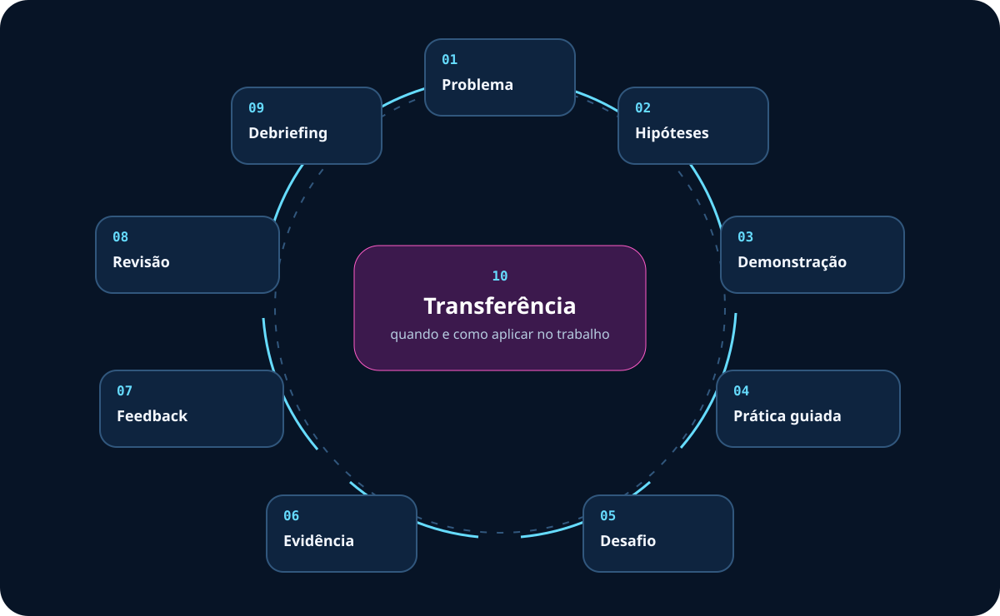

Situação profissional
Formadores precisam escolher e configurar tecnologias sem perder de vista o problema formativo.
Dia 1 • disponível
Compreender como a tecnologia modifica a aprendizagem, decidir com intencionalidade pedagógica e configurar recursos para produzir evidência, feedback e transferência.
Arquitetura pedagógica
O domínio técnico é necessário, mas não basta. Cada recurso é analisado pela função que desempenha na aprendizagem.
Formadores precisam escolher e configurar tecnologias sem perder de vista o problema formativo.
Analisar recursos, justificar escolhas e criar experiências alinhadas à aprendizagem e ao contexto.
Aprendizagem mediada, metodologias ativas, mediação, critérios de escolha e recursos do Teams.
Canvas e protótipo que conectam problema, ação, recurso, produto, critério, feedback e contingência.
Aplicação planejada em situação formativa real, com condições, responsável e alternativa simples.

Sequência metodológica
O mesmo movimento orienta o dia e reaparece, em escala menor, nos laboratórios.

Atividades
Cada atividade reúne problema, ação, mediação, evidência, feedback e contingência.
Abertura
Participantes analisam um episódio formativo, respondem individualmente e justificam sua leitura em pares.
Padrões de resposta orientam o debate e a mediação imediata, sem nota classificatória.
Fundamentos
Grupos especialistas analisam uma lente teórica e depois recombinam perspectivas para interpretar a experiência.
Síntese de cinco frases, confrontada por perguntas do formador e pelas demais lentes.
Laboratórios 1 e 2
Organizar uma comunidade de aprendizagem e transformar um aporte expositivo em sequência com decisão e aplicação.
Publicação autossuficiente e roteiro que explicita o que o participante faz antes, durante e depois dos slides.
Laboratórios 3 e 4
Planejar colaboração interdependente e usar respostas para regular a aprendizagem, não apenas contar acertos.
Roteiro de sala e questão contextualizada com distratores plausíveis e decisão de mediação.
Laboratórios 5 e 6
Organizar contribuições simultâneas e tornar a produção coletiva visível sem diluir responsabilidade individual.
Mapa que distingue fatos, interpretações e decisão; canvas com autoria, comentário e versão revisada.
Integração
Equipes desenham uma microatividade para um problema fictício do Judiciário usando no máximo dois recursos principais.
Canvas, protótipo executável, feedback por rubrica e nova versão com decisão de transferência.
Recursos do Dia 1
Links oficiais foram verificados em 15 de setembro de 2026. A disponibilidade depende da licença e das políticas do tenant.

Organiza interação, comunicação persistente, arquivos e encontros.
Ação: argumentar, colaborar e produzir.
Evidência: publicações, arquivos e versões.
Contingência: mural físico e pasta compartilhada.
Acesso: conta, equipe e políticas do TJRS.
Apoia diagnóstico, quizzes, instrução por pares e feedback.
Ação: decidir, justificar e revisar resposta.
Evidência: padrões de resposta e justificativas.
Contingência: cartões coloridos ou formulário impresso.
Acesso: audiência e coleta devem ser configuradas.
Integra apresentação, notas, chat e opções de visualização acessível.
Ação: antecipar, acompanhar e aplicar conceitos.
Evidência: decisões e respostas durante a exposição.
Contingência: projeção local e material acessível.
Limite: gravação não captura todos os elementos.
Torna visíveis agrupamentos, relações, hipóteses e prioridades.
Ação: mapear, comparar e sintetizar.
Evidência: mapa de raciocínio e decisão priorizada.
Contingência: notas adesivas e versão textual.
Acesso: compartilhamento externo pode ser restrito.
Apoia coautoria sincronizada, comentários e revisão de componentes.
Ação: cocriar, comentar e revisar.
Evidência: canvas com autoria e nova versão.
Contingência: Word compartilhado no SharePoint.
Acesso: não compartilhar com convidados externos.
Sustentam arquivos, coautoria, histórico de versões e continuidade.
Ação: produzir, revisar e recuperar versões.
Evidência: artefato compartilhado e histórico.
Contingência: arquivo local com protocolo de versão.
Privacidade: conferir destinatário e permissão.
Avaliação formativa
A rubrica serve para produzir melhoria, não apenas classificar o protótipo.
| Critério | Evidência esperada | Pergunta de revisão | Próxima ação |
|---|---|---|---|
| Alinhamento | Problema, objetivo, ação, recurso e evidência coerentes | O recurso resolve uma necessidade pedagógica real? | Retirar ou reconfigurar o que não contribui |
| Ação | Participante investiga, decide, produz, aplica ou revisa | Qual operação cognitiva e social está visível? | Reescrever instruções e produto |
| Feedback | Retorno específico usado em nova tentativa | O participante sabe o que melhorar e como? | Adicionar critério e momento de revisão |
| Mediação | Diagnóstico, perguntas, acompanhamento e síntese | Onde a intervenção do formador é necessária? | Planejar perguntas e debriefing |
| Governança | Acessibilidade, dados e permissões previstos | Quem pode acessar, editar e manter o produto? | Reduzir coleta e validar políticas |
| Contingência | Alternativa preserva a mesma finalidade | O objetivo sobrevive sem a ferramenta? | Preparar versão simples e testá-la |
Materiais
Somente materiais autorizados serão disponibilizados para visualização ou download.
Deck Reveal.js para mediação em sala, com notas e temporizador.
Abrir slidesÁrea preparada. Os arquivos entrarão após revisão e autorização de publicação.
Em preparaçãoBase conceitual FOFO/Enfam e documentação oficial Microsoft.
Em preparaçãoSíntese e transferência
O encerramento recupera o diagnóstico e exige uma mudança de critério, não apenas uma preferência por ferramenta.
Que fator orientava sua escolha de tecnologia?
Que ganho, limite, evidência e condição você verificará?
Que atividade real será revisada, por quem, quando e com qual contingência?